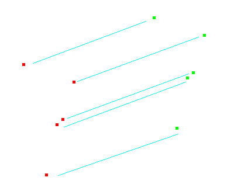

Traslazione 2D
Questo geoprocesso applica una trasformazione di traslazione 2D su tutti i punti, linee e poligoni delle geometrie del layer di input. Può essere applicato a tutti i tipi di layer vettoriali (shp, dgn, dxf, ecc.). A tal fine, l'utente deve inserire i valori di traslazione (offset) da applicare lungo x e y.

Questo geoprocesso può essere di grande utilità nell'omogeneizzazione di cartografie provenienti da fonti diverse, nel processo noto in linguaggio anglosassone come "conflation". Occorre tenere presente che, pur essendo applicabile a tutti i tipi di layer vettoriali (shp, dgn, dxf, ecc.), tuttavia il risultato della traslazione sarà sempre in formato shapefile.
In particolare, quando viene eseguita una traslazione in cui il layer vettoriale di input non è uno shapefile, il risultato della traslazione sarà dato da tre layer in formato SHP (uno di punti, uno di linee ed uno di poligoni).
Se, ad esempio, il layer di input al quale si applica la traslazione contiene solo punti e linee, lo shapefile di poligoni risultante sarà vuoto.